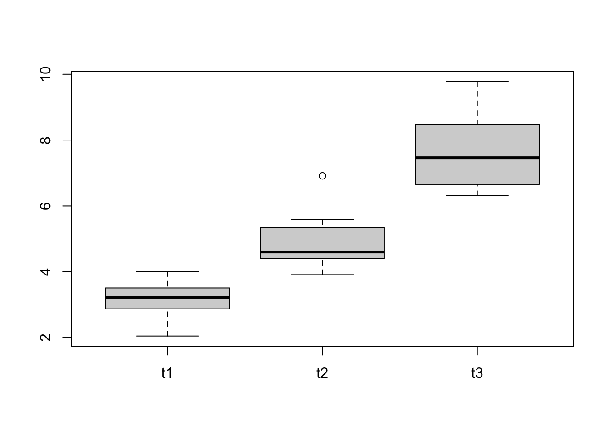
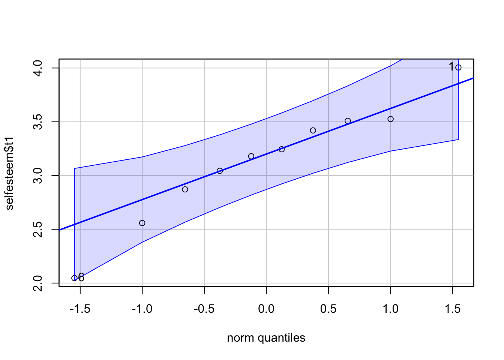
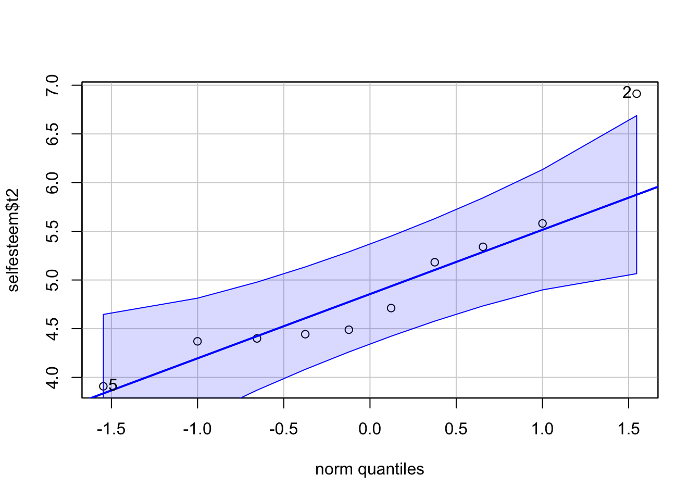
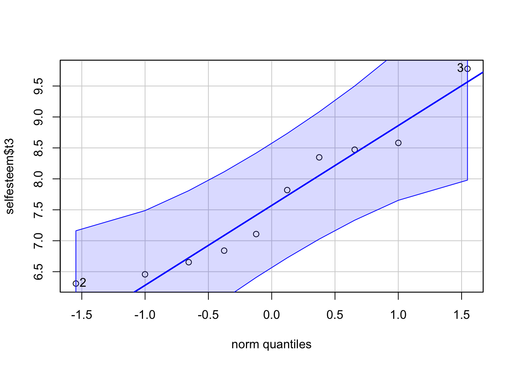
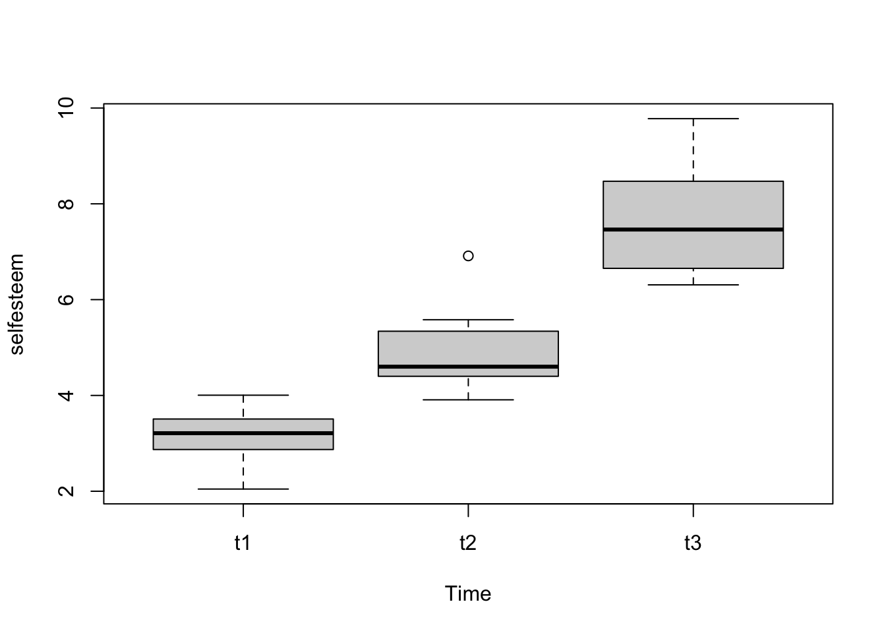
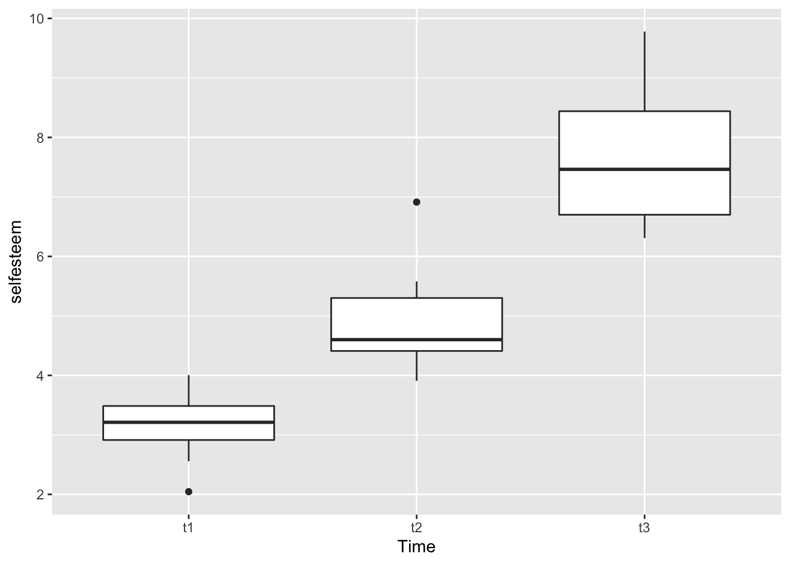
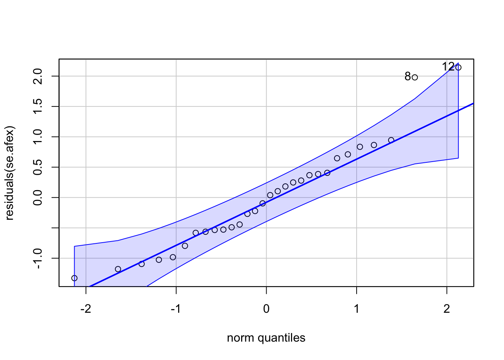

# load all libraries for this tutorial
#install.packages("datarium")
library(datarium)
library(jmv)
library(psych)
library(car)
library(tidyverse)
library(afex)
library(effectsize)
library(emmeans)ข้อมูลแบบวัดซ้ำ (repeated measures) สามารถจัดได้สองแบบ คือ แบบกว้าง (wide format) และแบบยาว (long format)
ในการจัดข้อมูลแบบกว้าง แต่ละแถว (row) จะแทนกลุ่มตัวอย่างแต่ละคน ข้อมูลตัวแปรตามที่วัดซ้ำจะแทนด้วยคอลัมน์ตามจำนวนการวัด ดังตัวอย่างด้านล่าง
data("selfesteem", package = "datarium")
head(selfesteem)## # A tibble: 6 × 4
## id t1 t2 t3
## <int> <dbl> <dbl> <dbl>
## 1 1 4.01 5.18 7.11
## 2 2 2.56 6.91 6.31
## 3 3 3.24 4.44 9.78
## 4 4 3.42 4.71 8.35
## 5 5 2.87 3.91 6.46
## 6 6 2.05 5.34 6.65ข้อมูลแบบกว้างเป็นการจัดข้อมูลที่นิยมใช้ใน repeated ANOVA ของโปรแกรมสถิติทั่วไป เช่น SPSS, jamovi
การเรียกดูค่าสถิติพื้นฐานในข้อมูลแบบกว้างนี้สามารถทำเหมือนกับการเรียกดูข้อมูลของตัวแปร (คอลัมน์) แต่ละตัว
psych::describe(selfesteem[,c("t1", "t2", "t3")])## vars n mean sd median trimmed mad min max range skew kurtosis se
## t1 1 10 3.14 0.55 3.21 3.17 0.45 2.05 4.01 1.96 -0.45 -0.67 0.17
## t2 2 10 4.93 0.86 4.60 4.81 0.60 3.91 6.91 3.00 1.01 0.05 0.27
## t3 3 10 7.64 1.14 7.46 7.53 1.40 6.31 9.78 3.47 0.40 -1.30 0.36boxplot(selfesteem[,c("t1", "t2", "t3")])
shapiro.test(selfesteem$t1)##
## Shapiro-Wilk normality test
##
## data: selfesteem$t1
## W = 0.96669, p-value = 0.8586shapiro.test(selfesteem$t2)##
## Shapiro-Wilk normality test
##
## data: selfesteem$t2
## W = 0.87588, p-value = 0.117shapiro.test(selfesteem$t3)##
## Shapiro-Wilk normality test
##
## data: selfesteem$t3
## W = 0.92271, p-value = 0.3802สำหรับ QQ plot เราจะใช้คำสั่ง qqPlot (P ตัวใหญ่) จาก package car
car::qqPlot(selfesteem$t1)
## [1] 6 1qqPlot(selfesteem$t2)
## [1] 2 5qqPlot(selfesteem$t3)
## [1] 3 2jmv Packageการวิเคราะห์ข้อมูลวัดซ้ำใน R นั้นมักจะวิเคราะห์ด้วย long format จึงไม่มีคำสั่ง Base R สำหรับวิเคราะห์ข้อมูลแบบ wide format
ถ้าต้องการวิเคราะห์ด้วย wide format เราสามารถใช้คำสั่ง anovaRM ใน package jmv ได้
โดยต้องกำหนด option หลัก 3 ตัว คือ rm, rmCells, และ rmTerms
ใน rm จะกำหนด label = ชื่อตัวแปรวัดซ้ำ เช่น เวลา/เงื่อนไข/ขนาดโดสยา/อื่นๆ และ levels = ชื่อระดับตัวแปรวัดซ้ำ
ใน rmCells จะกำหนด measure = ชื่อตัวแปรในข้อมูล คู่กับ cell = ชื่อ level ที่ตรงกัน
ส่วน rmTerms คือการกำหนดว่า effect ตัวไหนจะเป็นอิทธิพลแบบภายในบุคคล (within-subject)
jmv::anovaRM(data = selfesteem,
rm = list(
list(
label = "Time",
levels = c("Time 1","Time 2","Time 3")
)),
rmCells=list(
list(
measure="t1",
cell = "Time 1"),
list(
measure="t2",
cell = "Time 2"),
list(
measure="t3",
cell = "Time 3")),
rmTerms = ~ Time,
effectSize = "partEta",
spherTest = TRUE)##
## REPEATED MEASURES ANOVA
##
## Within Subjects Effects
## ──────────────────────────────────────────────────────────────────────────────────────────
## Sum of Squares df Mean Square F p η²-p
## ──────────────────────────────────────────────────────────────────────────────────────────
## Time 102.45582 2 51.2279125 55.46903 < .0000001 0.8603981
## Residual 16.62374 18 0.9235409
## ──────────────────────────────────────────────────────────────────────────────────────────
## Note. Type 3 Sums of Squares
##
##
## Between Subjects Effects
## ──────────────────────────────────────────────────────────────────────────────────
## Sum of Squares df Mean Square F p η²-p
## ──────────────────────────────────────────────────────────────────────────────────
## Residual 4.570442 9 0.5078269
## ──────────────────────────────────────────────────────────────────────────────────
## Note. Type 3 Sums of Squares
##
##
## ASSUMPTIONS
##
## Tests of Sphericity
## ─────────────────────────────────────────────────────────────────────────────
## Mauchly's W p Greenhouse-Geisser ε Huynh-Feldt ε
## ─────────────────────────────────────────────────────────────────────────────
## Time 0.5508534 0.0920755 0.6900613 0.7743711
## ─────────────────────────────────────────────────────────────────────────────หากต้องการค่าสถิติของ Greenhouse-Geisser ที่มีการปรับแก้ค่า df
jmv::anovaRM(data = selfesteem,
rm = list(
list(
label = "Time",
levels = c("Time 1","Time 2","Time 3")
)),
rmCells=list(
list(
measure="t1",
cell = "Time 1"),
list(
measure="t2",
cell = "Time 2"),
list(
measure="t3",
cell = "Time 3")),
rmTerms = ~ Time,
spherTest = TRUE,
spherCorr = "GG")##
## REPEATED MEASURES ANOVA
##
## Within Subjects Effects
## ────────────────────────────────────────────────────────────────────────────────────────────────────────────
## Sphericity Correction Sum of Squares df Mean Square F p
## ────────────────────────────────────────────────────────────────────────────────────────────────────────────
## Time Greenhouse-Geisser 102.45582 1.380123 74.236755 55.46903 0.0000022
## Residual Greenhouse-Geisser 16.62374 12.421104 1.338346
## ────────────────────────────────────────────────────────────────────────────────────────────────────────────
## Note. Type 3 Sums of Squares
##
##
## Between Subjects Effects
## ─────────────────────────────────────────────────────────────────────
## Sum of Squares df Mean Square F p
## ─────────────────────────────────────────────────────────────────────
## Residual 4.570442 9 0.5078269
## ─────────────────────────────────────────────────────────────────────
## Note. Type 3 Sums of Squares
##
##
## ASSUMPTIONS
##
## Tests of Sphericity
## ─────────────────────────────────────────────────────────────────────────────
## Mauchly's W p Greenhouse-Geisser ε Huynh-Feldt ε
## ─────────────────────────────────────────────────────────────────────────────
## Time 0.5508534 0.0920755 0.6900613 0.7743711
## ─────────────────────────────────────────────────────────────────────────────ข้อมูลแบบยาวเป็นรูปแบบที่เหมาะสำหรับข้อมูลเชิงซ้อน (nested data) การออกแบบแบบวัดซ้ำก็นับว่าเป็นข้อมูลเชิงซ้อนแบบหนึ่ง นั่นคือ การสังเกตหรือการวัด (observation) แต่ละครั้งซ้อนอยู่ในตัวกลุ่มตัวอย่างแต่ละคน
ในข้อมูลแบบยาว การสังเกตแต่ละครั้งจะแสดงในแต่ละแถว ข้อมูลจากกลุ่มตัวอย่างคนเดียวกันจะถูกระบุในคอลัมน์ id และการวัดซ้ำแต่ละครั้งจะแสดงด้วยคอลัมน์ Time
ในข้อมูลตัวอย่างนี้ กลุ่มตัวอย่างมีจำนวน 10 คน แต่ละคนถูกวัด 3 ครั้ง ดังนั้นข้อมูลแบบยาวจะมีทั้งหมด 30 แถว
คำสั่งการวิเคราะห์ใน R เกือบทั้งหมดจะใช้รูปแบบ long format นี้เป็นหลัก
se_long <- tidyr::pivot_longer(selfesteem, cols = c("t1", "t2", "t3"), names_to = "Time", values_to = "selfesteem")
se_long$Time <- factor(se_long$Time)
se_long$id <- factor(se_long$id) #very important. If ID is numerical, the results will be incorrect.
se_long## # A tibble: 30 × 3
## id Time selfesteem
## <fct> <fct> <dbl>
## 1 1 t1 4.01
## 2 1 t2 5.18
## 3 1 t3 7.11
## 4 2 t1 2.56
## 5 2 t2 6.91
## 6 2 t3 6.31
## 7 3 t1 3.24
## 8 3 t2 4.44
## 9 3 t3 9.78
## 10 4 t1 3.42
## # … with 20 more rowsการดูสถิติพื้นฐานทำโดยแบ่งข้อมูลตามตัวแปรวัดซ้ำ Time
describeBy(se_long$selfesteem, group = se_long$Time)##
## Descriptive statistics by group
## group: t1
## vars n mean sd median trimmed mad min max range skew kurtosis se
## X1 1 10 3.14 0.55 3.21 3.17 0.45 2.05 4.01 1.96 -0.45 -0.67 0.17
## -------------------------------------------------------------------------------------------------------
## group: t2
## vars n mean sd median trimmed mad min max range skew kurtosis se
## X1 1 10 4.93 0.86 4.6 4.81 0.6 3.91 6.91 3 1.01 0.05 0.27
## -------------------------------------------------------------------------------------------------------
## group: t3
## vars n mean sd median trimmed mad min max range skew kurtosis se
## X1 1 10 7.64 1.14 7.46 7.53 1.4 6.31 9.78 3.47 0.4 -1.3 0.36เนื่องจากความคลาดเคลื่อนในข้อมูลมีที่มาจากทั้งภายในบุคคล (within-subject error) และระหว่างบุคคล (between-subject error) การประมาณค่า standard error ด้วยคำสั่งทั่วไปอย่าง psych::describe จึงไม่ได้สะท้อนค่าความคลาดเคลื่อนที่ใช้ในการวิเคราะห์แบบวัดซ้ำ (คือใช้เฉพาะ within error)
คำสั่ง summarySEwithin() ใน package Rmisc จะแสดงค่า standard error และ CI ที่ปรับแก้ให้เหมาะสมกับการออกแบบแบบวัดซ้ำแล้ว
Rmisc::summarySEwithin(se_long,
measurevar = "selfesteem",
withinvars = "Time",
idvar = "id")## Time N selfesteem sd se ci
## 1 t1 10 3.140122 0.553252 0.1749536 0.3957727
## 2 t2 10 4.933942 1.126689 0.3562904 0.8059850
## 3 t3 10 7.636342 1.093209 0.3457030 0.7820346boxplot(selfesteem ~ Time, data = se_long)
ggplot(se_long, aes(x = Time, y = selfesteem)) +
geom_boxplot()
โมเดล aov สำหรับข้อมูลวัดซ้ำจะมีรูปแบบทั่วไปคือ y ~ x + Error(id/x)
x จะเป็นตัวแปรวัดซ้ำ ในตัวอย่างนี้คือ Time
Error() ใช้เพื่อระบุข้อมูลเชิงซ้อน เช่น id/x แสดงว่า ตัวแปร x ซ้อนอยู่ใน id ในที่นี้คือ การวัดแต่ละครั้ง Time ซ้อนอยู่ในกลุ่มตัวอย่างแต่ละคน id แสดงด้วย Error(id/Time)
se.aov <- aov(selfesteem ~ Time + Error(id/Time), data = se_long)
summary(se.aov)##
## Error: id
## Df Sum Sq Mean Sq F value Pr(>F)
## Residuals 9 4.57 0.5078
##
## Error: id:Time
## Df Sum Sq Mean Sq F value Pr(>F)
## Time 2 102.46 51.23 55.47 2.01e-08 ***
## Residuals 18 16.62 0.92
## ---
## Signif. codes: 0 '***' 0.001 '**' 0.01 '*' 0.05 '.' 0.1 ' ' 1afex packageคำสั่งใน afex จะให้รายละเอียดใน output มากกว่า base R
เราสามารถใช้คำสั่ง aov_car() แล้วตามด้วยสูตรโมเดลเหมือนในคำสั่ง aov() ด้านบน
ค่าสถิติทดสอบให้ดูที่บรรทัด Time ในบรรทัดนี้จะมีทั้งค่า SSwithin และ SSerror ในบรรทัดเดียวกันเลย
ส่วนค่า SSbetween (ความเปลี่ยนแปรที่มาจากความแตกต่างบุคคล) จะอยู่ที่บรรทัด (Intercept) ในส่วนของ Error SS
นอกจากนี้ยังมีการทดสอบ sphericity ให้โดยใช้ Mauchly test รวมไปถึงค่า epsilon ที่ได้จากวิธีประมาณการของ Greenhouse-Geisser และ Huynh-Feldt
se.afex <- aov_car(selfesteem ~ Time + Error(id/Time), data = se_long)
summary(se.afex)##
## Univariate Type III Repeated-Measures ANOVA Assuming Sphericity
##
## Sum Sq num Df Error SS den Df F value Pr(>F)
## (Intercept) 822.72 1 4.5704 9 1620.085 1.795e-11 ***
## Time 102.46 2 16.6237 18 55.469 2.014e-08 ***
## ---
## Signif. codes: 0 '***' 0.001 '**' 0.01 '*' 0.05 '.' 0.1 ' ' 1
##
##
## Mauchly Tests for Sphericity
##
## Test statistic p-value
## Time 0.55085 0.092076
##
##
## Greenhouse-Geisser and Huynh-Feldt Corrections
## for Departure from Sphericity
##
## GG eps Pr(>F[GG])
## Time 0.69006 2.161e-06 ***
## ---
## Signif. codes: 0 '***' 0.001 '**' 0.01 '*' 0.05 '.' 0.1 ' ' 1
##
## HF eps Pr(>F[HF])
## Time 0.7743711 6.032582e-07หากต้องการค่าสถิติทดสอบที่ปรับแก้แล้วของ Greenhouse-Geisser ให้ใช้คำสั่ง nice() ซึ่งเป็นคำสั่งเฉพาะใน afexคล้ายกับ summary() หากใช้คำสั่งนี้ จะแสดงค่าทดสอบที่ปรับแก้แล้ว
nice(se.afex)## Anova Table (Type 3 tests)
##
## Response: selfesteem
## Effect df MSE F ges p.value
## 1 Time 1.38, 12.42 1.34 55.47 *** .829 <.001
## ---
## Signif. codes: 0 '***' 0.001 '**' 0.01 '*' 0.05 '+' 0.1 ' ' 1
##
## Sphericity correction method: GGqqPlot(residuals(se.afex))
## [1] 12 8eta_squared(se.aov)## # Effect Size for ANOVA (Type I)
##
## Group | Parameter | Eta2 (partial) | 90% CI
## ---------------------------------------------------
## id:Time | Time | 0.86 | [0.74, 0.91]eta_squared(se.afex) #same as above## # Effect Size for ANOVA (Type III)
##
## Parameter | Eta2 (partial) | 90% CI
## -----------------------------------------
## Time | 0.86 | [0.74, 0.91]omega_squared(se.aov)## # Effect Size for ANOVA (Type I)
##
## Group | Parameter | Omega2 (partial) | 90% CI
## -----------------------------------------------------
## id:Time | Time | 0.81 | [0.64, 0.88]omega_squared(se.afex) #same as above## # Effect Size for ANOVA (Type III)
##
## Parameter | Omega2 (partial) | 90% CI
## -------------------------------------------
## Time | 0.81 | [0.64, 0.88]cohens_f(se.aov)## # Effect Size for ANOVA (Type I)
##
## Group | Parameter | Cohen's f (partial) | 90% CI
## --------------------------------------------------------
## id:Time | Time | 2.48 | [1.67, 3.23]cohens_f(se.afex) #same as above## # Effect Size for ANOVA (Type III)
##
## Parameter | Cohen's f (partial) | 90% CI
## ----------------------------------------------
## Time | 2.48 | [1.67, 3.23]ใช้คำสั่ง emmeans เพื่อสร้าง estimated marginal means ไว้สำหรับทดสอบรายคู่ โดยให้แบ่งการเปรียบเทียบด้วย Time
se.emm <- emmeans(se.afex, ~ Time)
se.emm## Time emmean SE df lower.CL upper.CL
## t1 3.14 0.174 9 2.75 3.53
## t2 4.93 0.273 9 4.32 5.55
## t3 7.64 0.361 9 6.82 8.45
##
## Confidence level used: 0.95คำสั่งเปรียบเทียบรายคู่
contrast(se.emm, "pairwise") ## contrast estimate SE df t.ratio p.value
## t1 - t2 -1.79 0.361 9 -4.968 0.0020
## t1 - t3 -4.50 0.340 9 -13.228 <.0001
## t2 - t3 -2.70 0.555 9 -4.868 0.0023
##
## P value adjustment: tukey method for comparing a family of 3 estimatespairs(se.emm) #same as above## contrast estimate SE df t.ratio p.value
## t1 - t2 -1.79 0.361 9 -4.968 0.0020
## t1 - t3 -4.50 0.340 9 -13.228 <.0001
## t2 - t3 -2.70 0.555 9 -4.868 0.0023
##
## P value adjustment: tukey method for comparing a family of 3 estimatescontrast_m <- data.frame("t1 vs t23" = c(-1, 1/2, 1/2),
"t1 vs t3" = c( 1, 0, -1))
contrast_m## t1.vs.t23 t1.vs.t3
## 1 -1.0 1
## 2 0.5 0
## 3 0.5 -1contrast(se.emm, method = contrast_m, adjust = "sidak", infer = TRUE)## contrast estimate SE df lower.CL upper.CL t.ratio p.value
## t1.vs.t23 3.15 0.214 9 2.57 3.72 14.678 <.0001
## t1.vs.t3 -4.50 0.340 9 -5.41 -3.59 -13.228 <.0001
##
## Confidence level used: 0.95
## Conf-level adjustment: sidak method for 2 estimates
## P value adjustment: sidak method for 2 testsCopyright © 2022 Kris Ariyabuddhiphongs